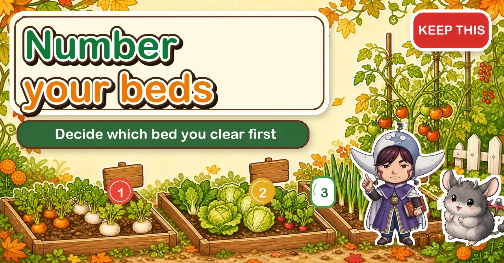
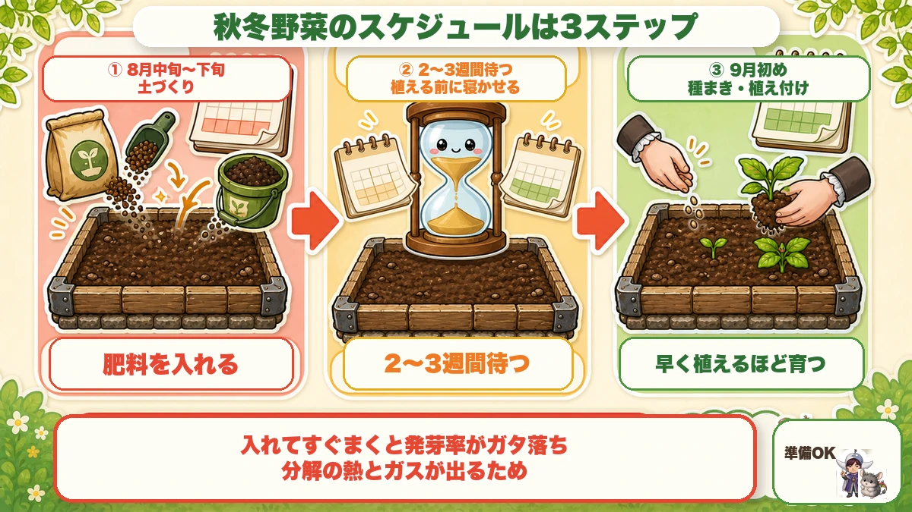
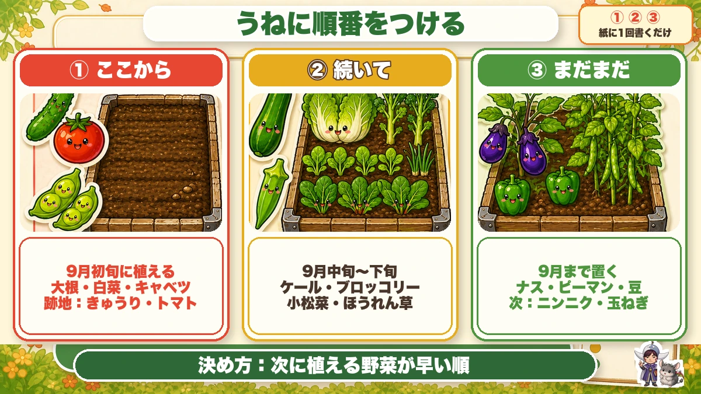
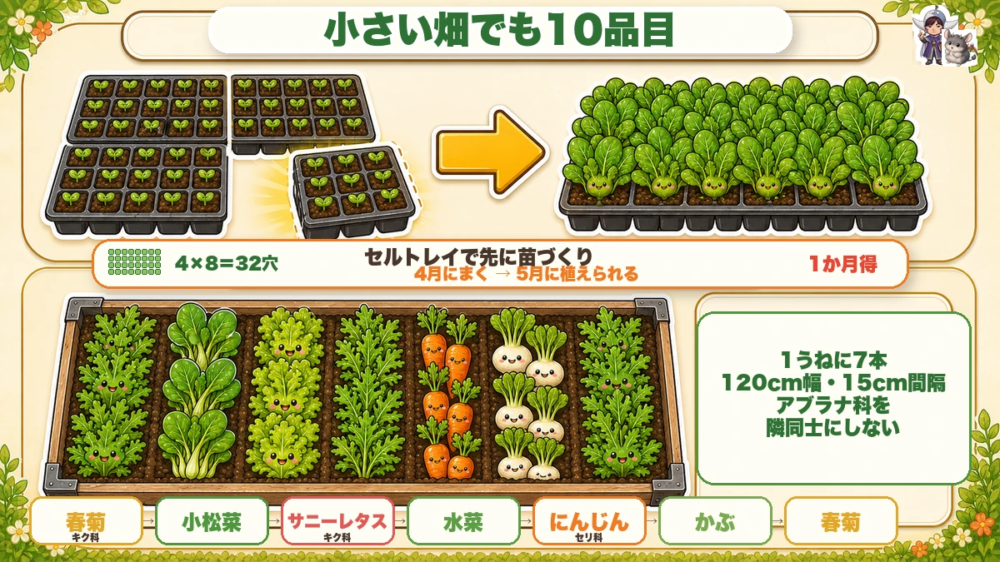
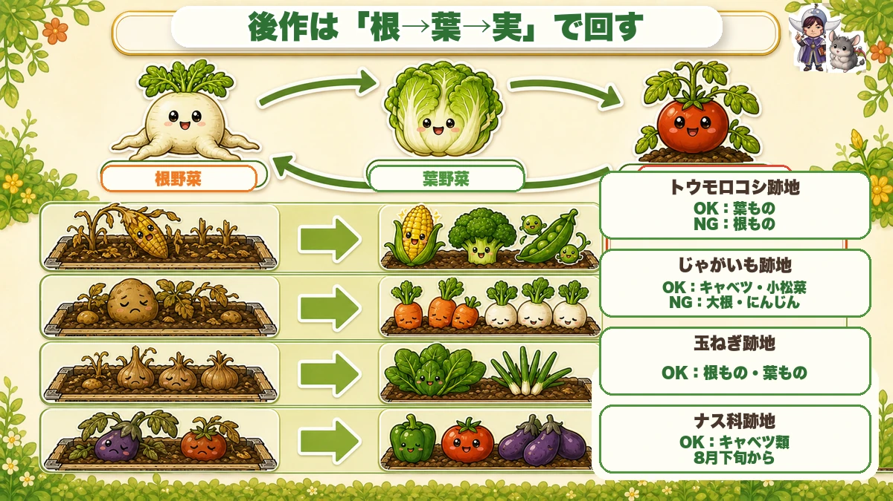

Number your beds 🍂 An autumn plan is about where to start, not what to grow

🗨️ "I decide what goes where on instinct, every year."
🗨️ "My plot's too small to grow much variety."
🗨️ "I'm scared of replant problems, so the layout never changes."
Hello, I'm Eiko. Eight years of growing vegetables organically and without pesticides, and a teaching licence in science.
The most important thing first:
A planting plan isn't about what to grow. It's about which bed you start on.
Without that decided, you work at random — and end up thinking "I'm not going to make it" 😢
The schedule is three steps

What this diagram says （図解の文字）
- The autumn schedule is three steps
- ① late summer — prepare the soil, add the feed
- ② wait two to three weeks — let it rest before planting
- ③ early autumn — sow and plant. The earlier it goes in, the better it grows
- Sow immediately after feeding and germination collapses — decomposition gives off heat and gas
- Prepare the soil and add the feed
- Leave it two to three weeks — this is the part people skip
- Sow and plant
The gap matters because sowing straight after adding organic feed collapses germination — decomposition produces heat and gas.
And winter crops are decided by how well they grow early, so working backwards, the soil work has to be finished well before planting.
If the beds that held sweetcorn, potatoes, onions or edamame are already empty, you can start now.
Give the beds an order

What this diagram says （図解の文字）
- Number the beds — ① ② ③ — write it down once
- ① first — planted early autumn: mooli, Chinese cabbage, cabbage. Clearing: cucumbers, tomatoes
- ② next — mid to late autumn: kale, broccoli, mustard greens, spinach
- ③ later — leave until the autumn is over: aubergines, peppers
With several beds, which one you clear first decides the whole season. And the rule is simple: in order of how early the next crop goes in.
- ① First — mooli, Chinese cabbage, cabbage, sprouting broccoli, cauliflower, romanesco, Brussels sprouts. These must go in early or they never bulk up. So clear the cucumber, tomato and edamame beds first
- ② Next — kale, broccoli, mustard greens, spinach. Broccoli still heads if slightly late, and a late spinach variety has a longer window
- ③ Later — aubergines, peppers and beans are still cropping. Keep those beds for garlic, onions, broad beans and peas
Ten crops in a small plot

What this diagram says （図解の文字）
- Ten crops even in a small plot
- 4 × 8 = 32 cells ／ raise plants in modules first ／ sow a month before the bed is free and gain a month
- Seven drills in one bed — 120 cm wide, 15 cm apart
- Don't put brassicas next to each other
- Chrysanthemum greens (daisy) → mustard greens → loose-leaf lettuce (daisy) → mizuna → carrot (carrot family) → turnip
Method 1: raise plants in modules and gain a month
The usual sequence is wait for the bed to be free, then sow — which wastes every week until it is.
Instead: sow into modules a month before the bed will be free.
- the current crop finishes at a known date
- the bed is usable a few weeks after that, once the soil work is done
- so sow a month before that date
- and on the day the bed is ready, you plant plants instead of seed — a month gained
A 128-cell tray cut into quarters (4 × 8 = 32 cells) is the right size; a home garden doesn't need more.
One tip: raise them at home, not at the plot. You can't visit a plot daily, and at home you notice the day they go short of water.
Method 2: several crops in one bed, in drills
Press a cane into the soil to mark drills 15 cm apart. A 120 cm bed takes seven drills, and each one can be a different crop — or half a drill each, which doubles it again.
Drills also keep things tidy, so you always know what's where.
The one rule: don't line up brassicas
Brassicas — mustard greens, mizuna, turnips, pak choi — are what the insects want, and putting them together builds a canteen.
So insert daisy-family (chrysanthemum greens, lettuce) or carrot-family (carrots) crops between them. Both are largely left alone.
For example: chrysanthemum greens → mustard greens → loose-leaf lettuce → mizuna → carrot → turnip → chrysanthemum greens.
Simply not having two brassicas adjacent is most of the benefit.
Follow root → leaf → fruit

What this diagram says （図解の文字）
- Follow with root → leaf → fruit
- Root crops ／ leaf crops
- After sweetcorn — OK: leaf crops ／ NG: root crops
- After potatoes — OK: cabbage, mustard greens ／ NG: mooli, carrots
- After onions — OK: root crops and leaf crops
- After nightshades — OK: brassicas
An easy way to remember what follows what:
- After sweetcorn → leaf crops yes, root crops no
- After potatoes → cabbage and mustard greens yes, mooli and carrots no
- After onions → both root and leaf crops
- After tomatoes, aubergines and peppers → brassicas
The thread running through it: root crops dislike ground left rough or full of residue, and leaf crops are more forgiving.
To sum up
- ✅ A plan is an order of operations, not a crop list
- ✅ Three steps: soil → wait two or three weeks → plant
- ✅ Feeding and sowing on the same day collapses germination
- ✅ Order the beds by how early the next crop goes in
- ✅ ① earliest plantings ② a few weeks later ③ leave for the autumn plantings
- ✅ Draw it once on paper
- ✅ Raise plants in modules a month ahead and gain a month
- ✅ Raise them at home, where you'll see them daily
- ✅ Seven drills at 15 cm in a 120 cm bed = seven crops
- ✅ Never put two brassicas next to each other
- ✅ Insert daisy-family or carrot-family crops between them
- ✅ Root → leaf → fruit is a usable rotation shorthand
You don't have to do all of it. Draw your beds on one sheet of paper and write ①②③ on them. That's the plan 🍂
Thank you for reading!